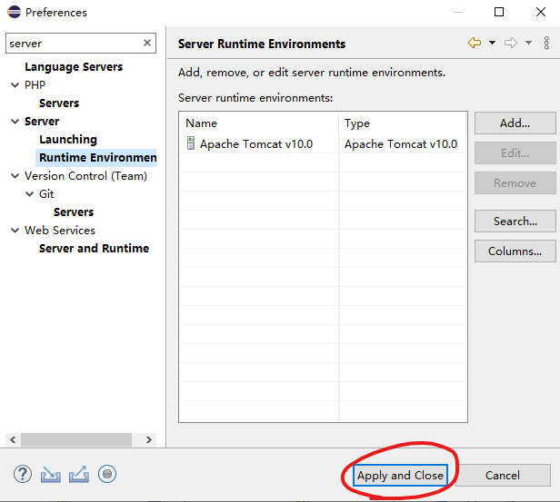
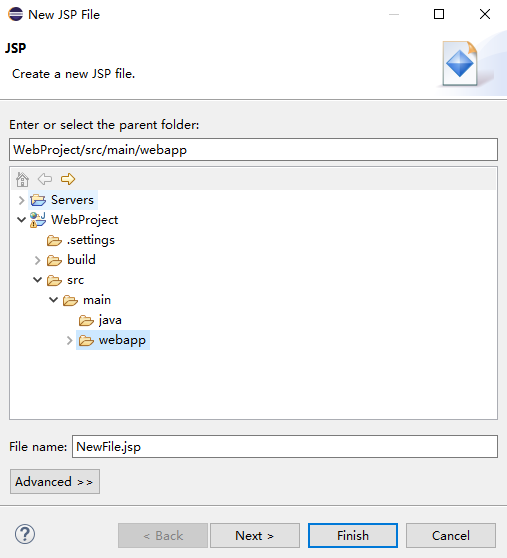

使用JDBC连接本地数据库
本教程包含以下元素
创建Web服务配置tomcat
开始写代码
eclipse汉化
本教程以eclipse2022-09版本为例
第一步,打开eclipse。这个界面有点小帅
第二步,下载并创建Web服务
打开eclipse-help-install New Software
点击ADD-向location添加内容 https://download.eclipse.org/releases/2022-06/202206151000 -点击Add
选择如下选项-点击Next
点击Next
再次点击Next
选择同意协议-点击Finish
此时右下角正在下载
下载过程中会弹出如下页面-全部勾选-点击Trust Selected
完成后选择重启
新建动态web项目
点击File-New-Other
选择Web-Dynamic Web Project 点击Next
主目录应该是这样
eclipse配置tomcat
先去下载tomcat
https://tomcat.apache.org以10.0.27为例-点击Downloads
下载64位 zip文件
下载后解压
打开eclipse选择 window-preferences
搜索server-选择人server下Runtime Environment-点击Add
选择Apache-Apache Tomcat v10.0点击Finish
选择路径-点击Finish
点击Apply and Close
测试一下环境
选择WebProject-新建jsp文件
选择webapp-默认命名为NewFile.jsp-点击Finish
给body里面加一些内容

点击启动按钮
然后就会自动跳转网页,不跳转的话,访问这个链接http://localhost:8080/WebProject/NewFile.jsp
应该长这样

开始写代码
首先要有数据库
先创建一个表,用来存储用户名和密码
打开mysql
创建数据库:create database school
选择数据库:use school
创建一个表:
create table student(
user varchar(10) not null,
password varchar(10) not null
)default charset utf8;
先插入一条数据测试一下
打开MySQL输入
use school //选择数据库
insert into student values('蔡徐坤','ikun'); //插入数据
select * from student; //查看student表
返回的数值应该是这样
接下来开始写JDBC
新建一个jsp文件把代码写进去
代码